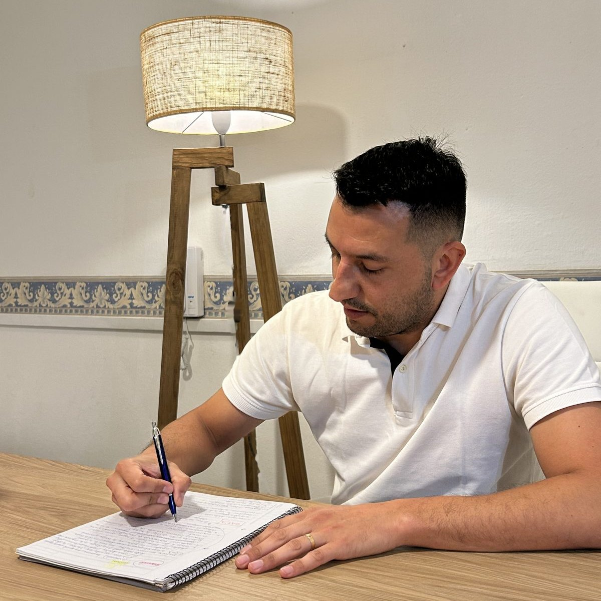
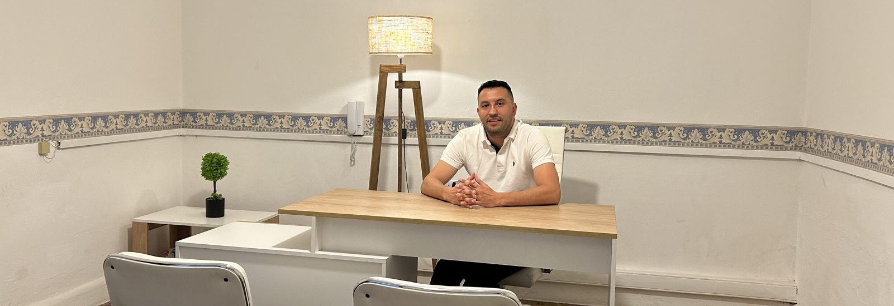
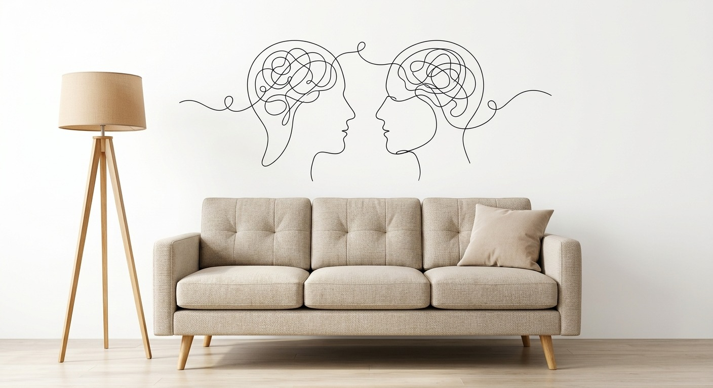
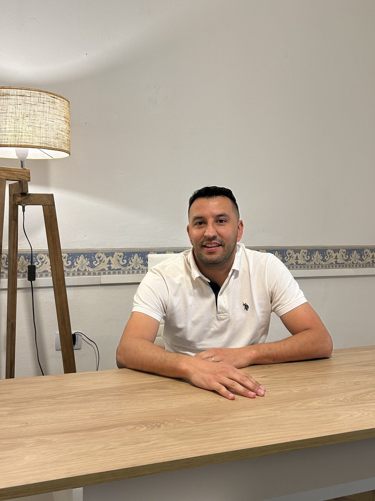
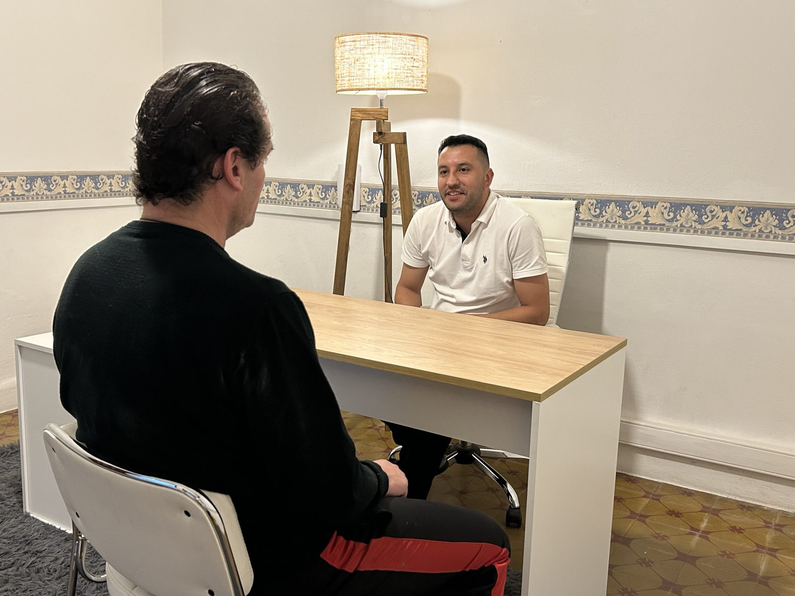

Psicología
Carrera de grado
Universidad Nacional de San Luis Argentina
Bienvenido/a
Terapia online
Un acompañamiento diseñado para personas que buscan procesar el estrés, fortalecer sus vínculos y adaptarse a su presente para disfrutarlo a pleno.
Soy Luciano Rinaldi
Lic. en Psicología · MP 1483

Hay vínculos que hieren y lastiman;
y hay vínculos que sanan.
Te doy la bienvenida
A veces el malestar no se expresa como un “trastorno”, sino como una tensión en la vida cotidiana y en los vínculos. Reconocerlo es el primer paso.
La culpa o nostalgia por la familia que quedó en el país de origen, o la sensación de no pertenecer del todo a ningún lugar.
La presión por sostener el éxito profesional y económico en un entorno hipercompetitivo, donde el ritmo de vida no te deja pensar.
Desafíos en la crianza de hijos que crecen en una cultura distinta a la tuya, o conflictos de pareja que se repiten.
La dificultad para establecer vínculos sanos en las relaciones personales y laborales sin sentir culpa.
Pérdidas, despedidas y cambios que no terminaron de elaborarse y que siguen pesando en el presente.
No podemos cambiar el pasado, pero sí nuestra historia, porque la historia consiste en apropiarnos del pasado.
Desde el psicoanálisis vincular y relacional entendemos que no sufrimos solos: nuestra mente se construye a partir del vínculo con las personas significativas. Estoy para escucharte, entenderte y acompañarte.

La cultura nos atraviesa
Haber vivido 10 años en el exterior (Brasil, Estados Unidos, Italia y España) me permitió experimentar las exigencias y desafíos emocionales de desarrollarme en una cultura distinta. Comprendo los desafíos de vivir en otro país, la importancia de expresar tus emociones en tu propia lengua, y la necesidad de contar con un profesional que entienda tu trasfondo cultural sin que tengas que explicárselo desde cero.
Carrera de grado
Universidad Nacional de San Luis Argentina
Carrera de pregrado
Università Regina Apostolorum Roma, Italia
Carrera de pregrado
Legion of Christ College of Humanities CT, USA
El enfoque
Un enfoque centrado en tus vínculos y en tu forma de habitar el mundo.

Para el psicoanálisis vincular relacional, la mente es un producto relacional, resultado de vínculos significativos: somos habitados por otros. No sufrimos solos.
La salud mental es tan preciosa y valiosa como un diamante. Así como los diamantes poseen diversas caras, la subjetividad está atravesada y constituida por varias dimensiones: la historia familiar, los vínculos de amistad y de pareja, la cultura, la educación, el trabajo, los mandatos sociales y la espiritualidad convergen para darle forma a quiénes somos.
En vez de un diagnóstico que te etiquete, abrimos un espacio de pensamiento para comprender por qué duele lo que duele hoy y qué patrones estás repitiendo en tus relaciones.
Un proceso en dos etapas, con un encuadre y herramientas adaptados a tu historia y a lo que estás buscando.
Primera etapa
Un primer tramo para conocernos y entender tu historia.
Segunda etapa
El trabajo sostenido hacia los cambios que buscas.
Un espacio para ti


El encuadre online se adapta a tus horarios: puedes coordinar antes o después de tu jornada laboral, sin importar la diferencia horaria.
Mi espacio cumple con estrictos estándares de privacidad ética y secreto profesional.
La terapia online es a través de Google Meet, una plataforma profesional confiable.
Paso a paso
Me escribes por WhatsApp o completas el formulario, donde me cuentas tu motivo de consulta.
Acordamos un día y horario para vernos y conocernos.
Tenemos las sesiones semanales online de la etapa diagnóstica.
Los honorarios se envían a través de una aplicación segura y sin comisiones: ARQ (DollarApp).
Hablemos
Cuéntame qué te está sucediendo, qué te gustaría cambiar en tu vida. Te respondo personalmente y coordinamos tu primera sesión.
Terapia online a través de Google Meet. Respondo cada consulta de forma personal y confidencial.